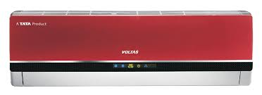

TELEVISION AND AIR CONDITIONER
SONY-BRAVIA TELEVISION:
Bravia televisions and their components are manufactured in Sony's plants in Mexico, Japan, and Slovakia for their respective regions and are also assembled from imported parts in Brazil, Spain, China, Malaysia and Ecuador. Principal design work for BRAVIA products is performed at Sony's research facilities in Japan, at the research and development department at the Sony de Mexico facility in Baja California, Mexico and at the Sony Europe facility in Nitra, Slovakia.

VOLTAS-AIR CONDITIONER:
Voltas Limited, is an Indian Home appliances company specialising in air conditioning and cooling technology. The company is broadly structured into projects and products business. The projects business is divided into Domestic Projects Group (DPG) and International Operations Business Group (IOBG). Meanwhile, the products business is classified into Unitary Products Business Group (UPBG), Mining & Construction Equipment Division (MCED), and Textile Machinery Division.
